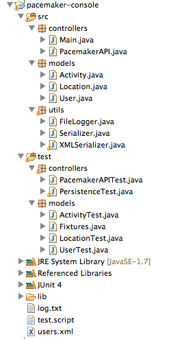
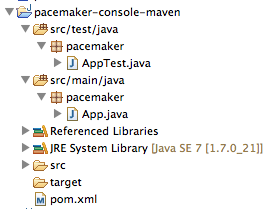
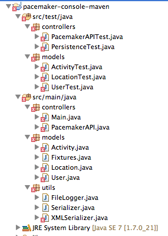
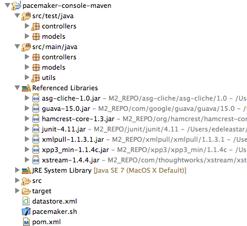

Objectives
Install and configure maven and then create and and test a single module maven project with several external dependencies. Once this is working, incorporate into Eclipse.
Install Maven
Visit the main Maven site:
and review some of the general introductions.
Download the project archive and follow these installations instructions
If you are working within the MSc lab (D05), you may need an additional step to circumvent the firewall rules. Read this FAQ entry here:
Finally, to verify a successful installation, follow this 5 minute guide
An important aspect of the installation is which verion of the JDK it uses. There is a significant difference between the class file formats from 1.6 to 1.7. For the code + libraries in this lab to build successfully, you need to have java 1.7 installed, and also maven must use this version.
You can check this my entering 'mvn -version' on the console. You should see something like this:
$ mvn -version
Apache Maven 3.1.0 (893ca28a1da9d5f51ac03827af98bb730128f9f2; 2013-06-28 03:15:32+0100)
Maven home: /Users/edeleastar/dev/apache-maven-3.1.0
Java version: 1.7.0_40, vendor: Oracle Corporation
Java home: /Library/Java/JavaVirtualMachines/jdk1.7.0_40.jdk/Contents/Home/jre
Default locale: en_US, platform encoding: UTF-8
OS name: "mac os x", version: "10.8.5", arch: "x86_64", family: "mac"
$Create Project
Review pacemaker project
You should have the pacemake project from lab04 in your workspace:

That lab has an archive of the project if you have lost track of it.
Create Maven Project
Navigate to a suitable folder and enter the following command:
mvn archetype:create -DarchetypeGroupId=org.apache.maven.archetypes -DarchetypeArtifactId=maven-archetype-quickstart -DgroupId=pacemaker -DartifactId=pacemaker-console-mavenThis may take some time, maven will download quite a few artifacts into it own repository. Eventually it should complete successfully:
The command will have created the following project structure:

The key file to inspect is the generated pom.xml:
<project xmlns="http://maven.apache.org/POM/4.0.0" xmlns:xsi="http://www.w3.org/2001/XMLSchema-instance"
xsi:schemaLocation="http://maven.apache.org/POM/4.0.0 http://maven.apache.org/xsd/maven-4.0.0.xsd">
<modelVersion>4.0.0</modelVersion>
<groupId>pacemaker</groupId>
<artifactId>pacemaker-console-maven</artifactId>
<version>1.0-SNAPSHOT</version>
<packaging>jar</packaging>
<name>pacemaker-console-maven</name>
<url>http://maven.apache.org</url>
<properties>
<project.build.sourceEncoding>UTF-8</project.build.sourceEncoding>
</properties>
<dependencies>
<dependency>
<groupId>junit</groupId>
<artifactId>junit</artifactId>
<version>3.8.1</version>
<scope>test</scope>
</dependency>
</dependencies>
</project>Generate an Eclipse Project
On the command line, change into the pacemaker-console-maven folder and enter the following command:
mvn eclipse:eclipseThis will generate an eclipse project from the pom.
In eclipse, import this project (as an existing project). It should show up on your workspace like this:

Copy paste sources into new project
Within eclipse, you should be able to copy/paste all of the sources into the appropriate folder in the new project. Also, delete the 'pacemaker' packages for the moment:

There are a significant number of errors however, which we will fix in the next step.
Incorporate Correct Library References
Inspect the pacemaker-console-maven folder, open and review the "pom.xml" file.
<project xmlns="http://maven.apache.org/POM/4.0.0" xmlns:xsi="http://www.w3.org/2001/XMLSchema-instance"
xsi:schemaLocation="http://maven.apache.org/POM/4.0.0 http://maven.apache.org/xsd/maven-4.0.0.xsd">
<modelVersion>4.0.0</modelVersion>
<groupId>pacemaker</groupId>
<artifactId>pacemaker-console-maven</artifactId>
<version>1.0</version>
<packaging>jar</packaging>
<name>pacemaker-console-maven</name>
<url>http://maven.apache.org</url>
<properties>
<project.build.sourceEncoding>UTF-8</project.build.sourceEncoding>
</properties>
<dependencies>
<dependency>
<groupId>junit</groupId>
<artifactId>junit</artifactId>
<version>3.8.1</version>
<scope>test</scope>
</dependency>
</dependencies>
</project>Modify the "url" and "version" elements to be more consistent with our project:
<version>1.0</version>
<url>www.wit.ie</url>We are relying on Java 7 features in our application and associated libraries. We need to specifically enable these. Extend the <properties> section as follows:
<properties>
<project.build.sourceEncoding>UTF-8</project.build.sourceEncoding>
<maven.compiler.source>1.7</maven.compiler.source>
<maven.compiler.target>1.7</maven.compiler.target>
</properties>The junit version in the generated POM is incorrect, acquire an configure the latest version.
<dependency>
<groupId>junit</groupId>
<artifactId>junit</artifactId>
<version>4.11</version>
<scope>test</scope>
</dependency>We are using a range of libraries, which we must incorporated into the pom. Guava and Xstream are well known, and already in the standard maven repositories. We just insert the correct references:
<dependency>
<groupId>com.google.guava</groupId>
<artifactId>guava</artifactId>
<version>15.0</version>
</dependency>
<dependency>
<groupId>com.thoughtworks.xstream</groupId>
<artifactId>xstream</artifactId>
<version>1.4.4</version>
</dependency>However, Cliche is older and us not in a common repository. We must still include it however. We will deal with it in the next step.
<dependency>
<groupId>asg-cliche</groupId>
<artifactId>asg-cliche</artifactId>
<version>1.0</version>
</dependency>Complete POM
The full version of the POM should look like this:
<project xmlns="http://maven.apache.org/POM/4.0.0" xmlns:xsi="http://www.w3.org/2001/XMLSchema-instance"
xsi:schemaLocation="http://maven.apache.org/POM/4.0.0 http://maven.apache.org/xsd/maven-4.0.0.xsd">
<modelVersion>4.0.0</modelVersion>
<groupId>pacemaker</groupId>
<artifactId>pacemaker-console-maven</artifactId>
<version>1.0</version>
<packaging>jar</packaging>
<name>pacemaker-console-maven</name>
<url>http://www.wit.ie</url>
<properties>
<project.build.sourceEncoding>UTF-8</project.build.sourceEncoding>
<maven.compiler.source>1.7</maven.compiler.source>
<maven.compiler.target>1.7</maven.compiler.target>
</properties>
<dependencies>
<dependency>
<groupId>junit</groupId>
<artifactId>junit</artifactId>
<version>4.11</version>
<scope>test</scope>
</dependency>
<dependency>
<groupId>com.google.guava</groupId>
<artifactId>guava</artifactId>
<version>15.0</version>
</dependency>
<dependency>
<groupId>com.thoughtworks.xstream</groupId>
<artifactId>xstream</artifactId>
<version>1.4.4</version>
</dependency>
<dependency>
<groupId>asg-cliche</groupId>
<artifactId>asg-cliche</artifactId>
<version>1.0</version>
</dependency>
</dependencies>
</project>To ensure that the maven file is correct, enter the following command:
mvn validateThis will pick up an errors in the POM, although it will not check availability of the dependencies.
Build
Resolving asg-cliche
The asg-cliche library is not in any public repository, so we must install it ourselves in our local repo. Locate the jar from a previous project, and rename it for simplicity to be asg-cliche-1.0.jar.
Navigate to the folder containing the jar, and enter the following command:
mvn install:install-file -Dfile=asg-cliche-1.0.jar -DgroupId=asg-cliche -DartifactId=asg-cliche -Dversion=1.0 -Dpackaging=jarThis will install the jar file in the local .m2 repository.
Build Goal
Open a command prompt/shell and change into the new "pacemaker-console-maven" project folder. Type the following:
mvn testA broad range of downloads will be generated by this command, including updates to maven itself and the referenced libraries. If successful, the build process will eventually report successful test execution.
Locate and inspect the generated "target" folder in the pacemaker-console-maven project:
We can now regenerate the eclipse project to eliminate the errors
mvn eclipse:eclipseBefore refreshing the project in eclipse, you need to make sure that the 'M2REPO' classpath variable is 'bound' to your local .m2 folder. These variables are available in 'Preferences->Java->Build Path->Classpath Variables'
Creating a variable will enable you to enter something like this:

If configured successfully, it may look like this:

When refreshed, the project should be fully resolved in eclipse:

Refresh the project in Eclipse, and the errors should be gone. You should be able to run the project and also run the test from within eclipse.
Package Goal
Try the following command:
mvn packageThis should generate a pacemaker-console-maven-1.0.jar file in the target folder
Try to work out the command line necessary to execute the application. To do so, you will be particularly interested in the Maven Repository. This is the folder on your computer where the external dependencies (the commons and xtream libraries) are downloaded to, as well as the core maven plugins. This folder is called ".m2" and is generally located in your home folder.
Explore Repositories
Local Repository
Locate the local maven repository - is should be in your home folder/.m2/repository. It contains not just dependencies explicitly downloaded as part of the project you have just constructed, but also components downloaded by maven as part of the goals you have invoked. This may include components used b maven itself.
Install Goal
We can install the component we just generated into the local maven repository.
mvn installIf you examine the repository, and recall the naming system we adopted for the component, then you can locate the generated jar file.
Unix Launch Script
Executing the component from the command line requires a review of the locations of the generated jar file, and the associated libraries. The previous step will have centralized all of these into the maven 2 repository HOME/.m2/repository. The simplest mechanism for launching the application will be to compose a shell script.
On Unix/Linux/OS X, the script can be structured as follows:
M2_REPO=/Users/edeleastar/.m2/repository
export CLASSPATH=%CLASSPATH%:\
${M2_REPO}/pacemaker/pacemaker-console-maven/1.0/pacemaker-console-maven-1.0.jar:\
${M2_REPO}/com/thoughtworks/xstream/xstream/1.4.4/xstream-1.4.4.jar:\
${M2_REPO}/com/google/guava/guava/15.0/guava.15.0.jar:\
${M2_REPO}/asg-cliche/asg-cliche/1.0/asg-cliche-1.0.jar
java controllers.MainThe first two entries establish environment variables to abbreviate the location of the maven repository, and the Pim jar just installed into it. The 'export CLASSPATH...' entry sets up the classpath to include the pim jar file, and also the required libraries (also located in the repository). The final entry is the launch command itself, which invokes the main method in the appropriate class.
Windows Launch Script
On Windows, the script needs to be formulated differently. Firstly, we need a helper script - cpappend.bat - shown here:
set CLASSPATH=%CLASSPATH%;%f1This batch file will be used by the launch script to construct the classpath appropriately. The Windows version of the launch script has a similar structure, but different syntax:
echo off
set M2_REPO=C:/docume1/eamonn1/.m2/repository
set CLASSPATH=
call cpappend.bat "%M2_REPO%/pacemaker/pacemaker-console-maven/1.0/pacemaker-console-maven-1.0.jar;"
call cpappend.bat "%M2_REPO%/com/thoughtworks/xstream/xstream/1.4.4/xstream-1.4.4.jar;"
call cpappend.bat "%M2_REPO%/com/google/guava/guava/15.0/guava.15.0.jar;"
call cpappend.bat "%M2_REPO%/asg-cliche/asg-cliche/1.0/asg-cliche-1.0.jar;"
java controllers.MainThe script is very sensitive to cases, semicolons (instead of colons in the original) and the presence of whitespace. Also, note carefully the structure of the home folder path in particular.
Run the script, you should expect to be using the pacemaker console user interface.
Exercises
The complete maven pim project so far:
Exercise 1
Install the following editor:
Note that by just dragging / dropping a folder into the editor window a 'project' view is presented, not unlike the package view in Eclipse. This includes syntax highlighting, but not of course refactoring or debugging.
Make a superficial change to the user interface of the pacemaker application - a different greeting for example. Just using maven - and the execution scripts we have covered in the last step, build, test and interactively execute the application
Exercise 2
Suppose you wanted to use the joda date time library
and say you are interested in its Duration data type:
When just using eclipse, you would have incorporate the relevant jar files into the project. With maven however, you will need to incorporate the appropriate references into the pom file.
This it the maven repository for joda time libraries:
.. and the specific reference we are looking for:
Remember, the steps involved in bringing in a new library:
- incorporate the dependency into the pom
- do a build or test (via maven)
- regenerate the eclipse project using 'mvn eclipse:eclipse'
- refresh the project in eclipse
Try this now for joda time - perhaps introducing a Duration attribute into Activity.
Exercize 3: Maven Eclipse Plugin
This is a plugin for eclipse to support maven directly in the IDE:
Documented here:
Install it an explore the maven project we have just generated using it.
Exercise 3: Gradle
Gradle is seen as a potential successor to Maven - and is in fact built on the maven infrastructure.
Investigate the issues associate with moving from maven to Gradle. This page might be useful: